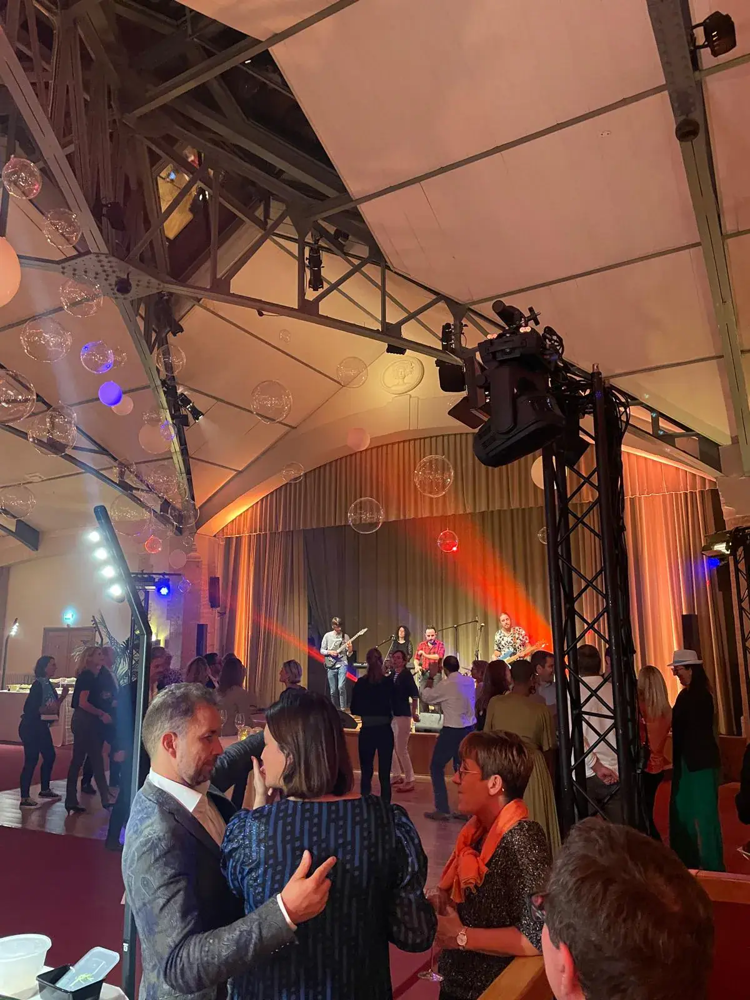
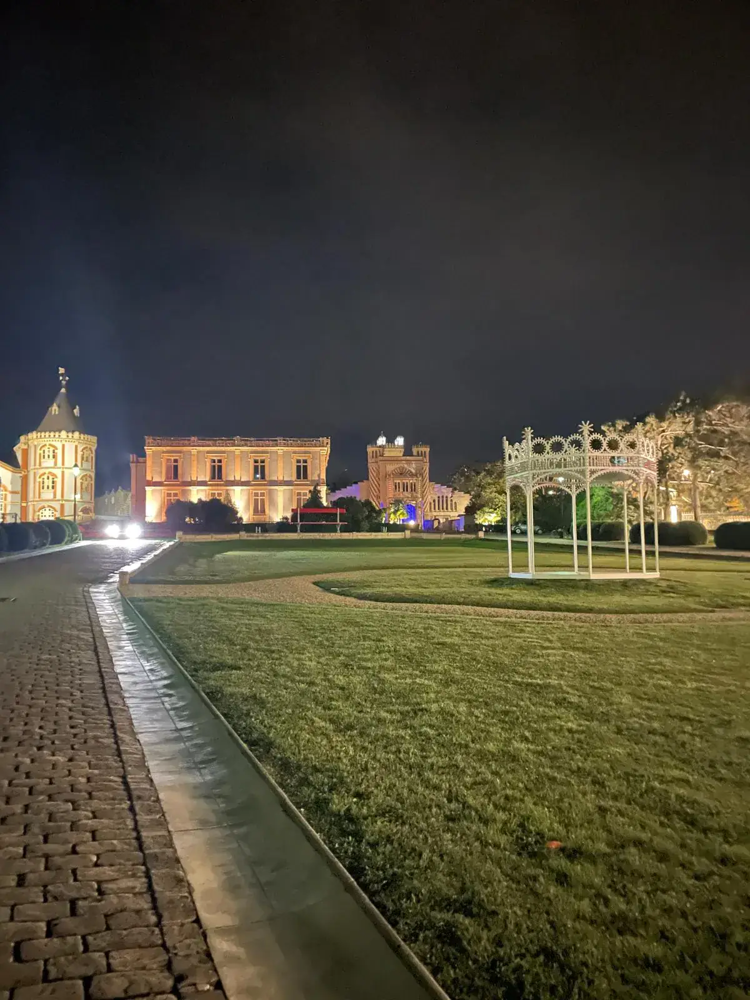

Le grand dîner dans un lieu iconique

Notre équipe a produit cette soirée au Louvre.

Notre équipe a produit cette soirée pour Deloitte, au Louvre.
L'ambiance. Lumières basses, nappes blanches, vue sur un monument : un musée, un palace, un hôtel particulier ou un théâtre privatisé. Le chic assumé, sans rigidité.
Ce que vivent les équipes. On se change, on arrive en tenue de soirée et on dîne à une table pensée pour mélanger les services. Le plan de table est la vraie scénographie : on place les équipes à côté de celles qu'elles croisent peu.
Le moment fort. Le toast de la direction, puis une surprise au dessert : un film de l'année projeté sur les murs, un quatuor, un chœur d'invités.
Côté pratique. Jauge fixée par la salle, accès et vestiaire à anticiper, horaires encadrés par le lieu (fin de soirée parfois imposée), menus pour chaque régime (végétarien, halal, sans gluten, allergies), accès PMR à vérifier dès la visite, taxis ou navettes pour le retour.
La soirée dansante à thème : disco, années 80, années 2000

Notre équipe a produit cette soirée pour BNP, à Reims.
L'ambiance. Boule à facettes, néons, dress code qui joue le jeu : on choisit une décennie et on y va franchement, avec un DJ ou un groupe live qui connaît son répertoire.
Ce que vivent les équipes. Tout le monde se prend au jeu, du stagiaire au dirigeant. On se déguise un peu, on se retrouve sur la piste, on pose pour la photo d'équipe. Les silences gênés des fêtes d'entreprise n'ont pas leur place.
Le moment fort. Le « slow de la direction » ou la chorégraphie surprise d'une équipe, sur le tube choisi par les salariés : on vote pour la playlist avant la soirée.
Côté pratique. Dress code annoncé tôt, avec des accessoires prêtés sur place pour ceux qui n'ont pas le temps. Volume réglé pour que l'on s'entende (et pour les oreilles sensibles), zone calme, bar sans alcool aussi soigné que le reste, vestiaire, fin avant les derniers transports ou navettes organisées.
La guinguette chic ou le bal

Notre équipe a produit cette soirée pour BNP, à Reims.
L'ambiance. Guirlandes, tables de bois, accordéon et son plus moderne : une guinguette version palace, dans un jardin, sur une péniche, sous une verrière ou une grande salle décorée.
Ce que vivent les équipes. On danse en cercle, on tombe sur un collègue qu'on n'a pas vu depuis un an, on mange des plats à partager. Une ambiance de fête de village, très chic, où personne ne reste dans son coin.
Le moment fort. Le bal d'ouverture mené par un meneur de bal : la direction ouvre la danse, puis une farandole traverse toute la salle.
Côté pratique. Prévoir un plan B intérieur si le lieu est en plein air en décembre (chauffage, couvertures, tentes), des places assises nombreuses, une piste sans marches pour les personnes à mobilité réduite, des boissons chaudes sans alcool, des horaires compatibles avec les contraintes familiales.
Le club de jazz privatisé

Notre équipe a produit cette soirée au Moulin Rouge.
L'ambiance. Un club de jazz parisien privatisé pour vos équipes : cave voûtée ou salle feutrée, lumière ambrée, scène à quelques mètres des tables, trio ou quartet en live.
Ce que vivent les équipes. On dîne à des tables serrées, on écoute, on se parle à l'oreille entre deux morceaux. Une soirée chic et intime, loin des fêtes bruyantes, où l'on se retrouve vraiment.
Le moment fort. Un morceau arrangé pour l'entreprise, ou la jam finale où un collègue musicien rejoint le groupe sur scène sous les applaudissements de tous les services.
Côté pratique. Jauge faible à moyenne selon le club, placement des tables pensé pour l'écoute, horaires des sets, menus pour chaque régime, boissons sans alcool aussi soignées que le reste, accès à vérifier (beaucoup de clubs sont en sous-sol, avec escalier), retours à prévoir.
Le chalet sur les toits
Inspiration · via Pinterest.
Inspiration · via Pinterest.
Inspiration · via Pinterest.
L'ambiance. Un chalet éphémère installé sur un toit de Paris : bois, plaids, braseros, guirlandes, vue sur les toits et les monuments. L'hiver chic, sans quitter la ville.
Ce que vivent les équipes. On arrive, on se réchauffe, on partage des plats d'hiver préparés par un traiteur, on sort sur la terrasse puis on danse à l'intérieur. Les services se mélangent sans effort.
Le moment fort. Le toast de la direction face aux toits de Paris à la tombée de la nuit, plaid sur les épaules, puis une photo de groupe avec la ville en fond : le souvenir de l'année.
Côté pratique. Plan B météo couvert et chauffé, jauge de terrasse limitée par les règles de sécurité du lieu, accès PMR et monte-charge à vérifier, vêtements chauds, horaires encadrés par le voisinage, retours à prévoir.
La croisière sur la Seine
L'ambiance. Un bateau privatisé, des monuments qui défilent, le pont supérieur pour le cocktail et la salle pour le dîner : Paris de nuit comme décor, sans rien avoir à décorer.
Ce que vivent les équipes. On dîne en glissant sur l'eau, on monte prendre l'air sur le pont, on regarde la tour Eiffel scintiller à l'heure pile. L'espace est limité : on se retrouve, on se parle.
Le moment fort. Le toast de la direction sur le pont avec la tour Eiffel en fond, avec un compte à rebours collectif pour le scintillement.
Côté pratique. Jauge fixée par le bateau (généralement quelques dizaines à quelques centaines de personnes), embarquement à horaire précis (le bateau n'attend pas), froid et vent sur le pont en décembre, vêtements chauds et vestiaire, accès par passerelle à vérifier pour les personnes à mobilité réduite, mal de mer rare mais à anticiper, retours depuis le quai à prévoir.
La remise de trophées décalée
Inspiration · via Pinterest.
L'ambiance. Tapis rouge, flashs, présentateur survolté : une cérémonie de récompenses à la façon d'une grande soirée de cinéma, mais avec des prix d'entreprise.
Ce que vivent les équipes. Chaque équipe monte sur scène pour un prix drôle ou touchant : le « plus patient au support », la « meilleure réunion qui aurait pu être un mail », le « sourire du lundi ». On rit de soi et on se découvre.
Le moment fort. Le trophée du public, voté en direct par les équipes sur leur téléphone, remis par la direction en larmes de rire.
Côté pratique. Les récompenses se choisissent avec soin : aucune blague qui vise une personne, validation en amont par les RH. Prévoir un écran lisible depuis le fond de la salle, des sous-titres si besoin, un déroulé court (pas plus de 45 minutes) pour garder l'énergie, et un repas servi pendant la cérémonie.
Le brunch des vœux
Inspiration · via Pinterest.
L'ambiance. Un brunch dans un lieu baigné de lumière (verrière, hôtel particulier, galerie) : grande table commune ou buffets, café, viennoiseries, jus pressés. Une manière douce de lancer l'année.
Ce que vivent les équipes. On se retrouve en tenue décontractée chic, sans la fatigue d'une soirée tardive. Les conversations sont plus calmes, on prend le temps, et les familles peuvent être invitées.
Le moment fort. Les vœux de la direction en dix minutes, puis un mur des vœux où chacun écrit son souhait pour l'année, filmé et offert à chaque équipe en souvenir.
Côté pratique. Date en début janvier, créneau de 11 h à 15 h, menus pour chaque régime, boissons sans alcool naturellement au centre, accès du lieu à vérifier, garde d'enfants si les familles sont invitées.
Le calendrier : où en êtes-vous ?
Inspiration · via Pinterest.
Inspiration · via Pinterest.
Inspiration · via Pinterest.
Si vous lisez ceci fin octobre
Vous êtes dans les temps. Choisissez le format, bloquez le lieu et la date (les vendredis et jeudis de décembre partent en premier), validez le traiteur, le DJ ou le spectacle. Lancez les invitations dès que la date est sûre.
Si vous lisez ceci mi-novembre
Il reste de la place, mais moins de choix. Partez d'un lieu encore disponible et jouez la carte du décor et du dress code. Un bal, un brunch des vœux ou une remise de trophées se montent plus vite qu'un grand dîner. Envoyez le « save the date » aux équipes sans attendre.
Si vous lisez ceci début décembre
Il sera difficile de trouver un lieu et des prestataires pour décembre. Deux options : une soirée plus petite et plus simple en décembre, ou le plan B ci-dessous.
Plan B : les vœux de janvier
Une soirée de vœux en janvier n'est pas un lot de consolation. Les lieux sont plus faciles à obtenir, les prestataires plus disponibles, et le budget peut respirer. Elle a aussi un avantage : elle lance l'année au lieu de la clore.
Tous les formats ci-dessus fonctionnent en janvier. Nous gardons l'idée, nous changeons le message : « bonne année » à la place de « merci pour cette année ».
Inspiration · via Pinterest.
Questions fréquentes
Quand réserver une soirée de fin d'année d'entreprise à Paris ?
Dès l'automne. Lieux, traiteurs et prestataires sont très demandés en décembre. Idéalement, la date et le lieu sont bloqués fin octobre ou début novembre.
Combien de temps à l'avance faut-il s'y prendre ?
Pour un lieu de prestige ou un bateau, comptez deux à trois mois. Pour un format plus simple (brunch des vœux, trophées, bal dans un lieu disponible), six à huit semaines suffisent si les décisions vont vite.
Que faire si on s'y prend trop tard pour décembre ?
Basculer sur des vœux de janvier. Les disponibilités sont meilleures et le format peut rester festif. Autre option : une soirée plus petite en décembre, dans un lieu simple à décorer.
Combien coûte une soirée de fin d'année ?
Cela dépend du nombre d'invités, du lieu et du format. Notre guide détaille le budget par poste : budget soirée d'entreprise à Paris.
Comment faire une soirée de fin d'année inclusive ?
Prévoir des boissons sans alcool soignées, des repas pour chaque régime (végétarien, halal, sans gluten, allergies), un lieu accessible, un horaire qui permet de rentrer en transports, des taxis ou navettes pour le retour, et un format où l'on peut participer sans danser ni monter sur scène.
Comment impliquer les équipes dans l'organisation ?
Faire voter le thème ou la playlist, constituer un petit comité de volontaires de plusieurs services, laisser les équipes proposer des prix pour la remise de trophées, et recueillir en amont les contraintes (régimes, accessibilité, garde d'enfants).